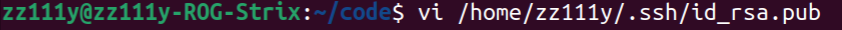
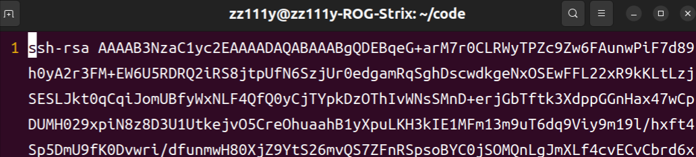
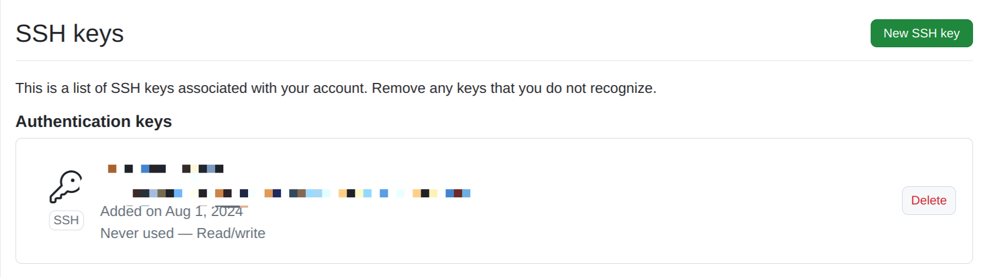
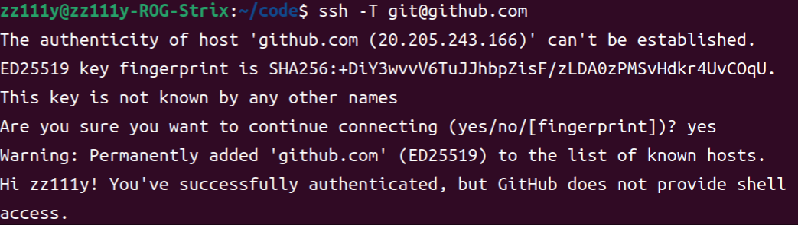
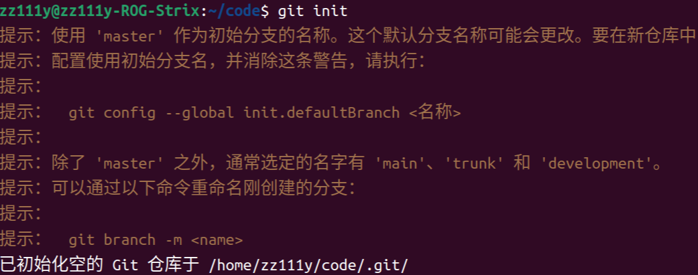
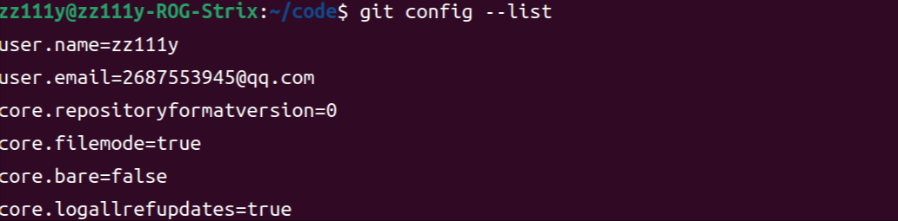
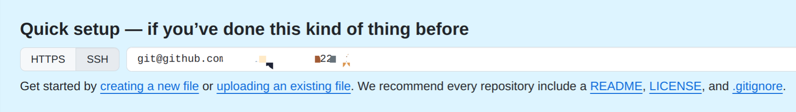
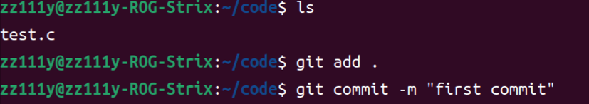
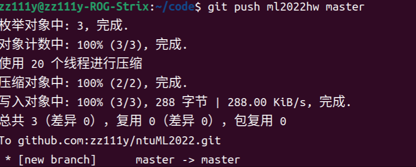

git的安装
首先更新软件列表：1
sudo apt update
然后直接安装：1
sudo apt install git
远程连接github
首先使用以下命令生成ssh公钥1
ssh-keygen -t rsa -C "email@example.com"
点击三次enter即可生成。生成后用文本编辑器打开对应的文件(即id_rsa.pub)，如下所示：


将里面的内容全选复制，打开github，进入个人设置中的SSH and GPG keys中，选择add new SSH key，随便取个title，把刚刚那一堆粘到下面，然后add，就会出现下面这么个东西

下面输入ssh -T git@github.com，出现下面这个内容，代表连接成功

git初始化
新建一个文件夹，运行git init命令初始化该文件夹为git仓库

然后用以下命令设置username和email：1
2git config --global user.name "Your name"
git config --global user.email "Your email"
配置好后，使用git config --lsit可以查看配置信息，如下：

连接远程仓库
在github的repository主页可以看到以下内容

复制SSH的内容，执行以下语句：1
git remote add origin git@github.com:xxx/xxx.git
其中origin是你本机为这个仓库起的别名，后面是复制粘贴来的，即可连接到远程仓库。连接好后，使用git remote -v即可查看。
上传到远程仓库
首先我们写一个文件，然后用add命令将其放到staging area，然后用commit命令将其送到local repository：

下一步就可以用push命令将其推送到远程：

这时候远程仓库就有本次推送了。
一些基本操作
- 常用查找项目前后缀
- awesome xxx：百科全书
- xxx sample：找示例
- xxx starter/boilerplate：空项目框架
- xxx tutorial：教程
- “借鉴”他人的项目
在terminal使用git clone URL即可拷贝指定URL的项目到所在文件夹 - git clone和下载zip解压有什么不同
git clone下来的是一个仓库，会有一个.git文件，可以执行git相关操作；而download zip得到的没有，需要git init才能让其成为仓库 - 提交文件
git有三个区域：working dir（当前实际操作的地方）、stage（临时保存改动）、HEAD（指向最后一次提交）- 提出更改（放到stage）：git add
，使用git add -A可以提交所有更改 - 提交更改（提交到HEAD）：git commit -m “commit-information”
- 提出更改（放到stage）：git add
- 查看历史提交
使用git log --stat可以查看历史提交 - 替换本地改动
使用git checkout <filename>可以将HEAD中的内容替换掉工作目录中的文件，不会影响stage和新建文件。
如果已经commit，可以丢弃所有改动，在远程仓库获取最新版本并使本地主分支指向它：git fetch origin、git reset --hard origin/master；或者可以使用git reset HEAD^x回到上x个commit；或者可以直接到history版本中将改动部分复制粘贴回来。 - 分支
master一般放已经完善的代码，如果某个项目需要长时间的开发，建议使用分支功能将其放到另一个分支上，并在完善后将其合并到master上。不同分支互不影响。- 查看所有分支：
git branch - 在当前分支新建分支：
git checkout -b <branchname> - 切换分支：
git checkout <mastername> - 删除分支：
git checkout -d <branchname> - 将指定分支合并到当前分支：
git merge <branchname> - 遇到无法处理的冲突，停止合并：
git merge abort
- 查看所有分支：
- 交互远程仓库
- 推送HEAD中更改：
git push origin branch，其中branch是分支名 - 拉取远程仓库：
git pull origin branch
- 推送HEAD中更改：